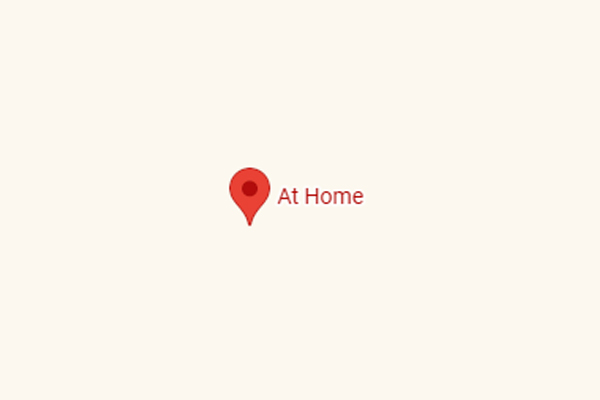
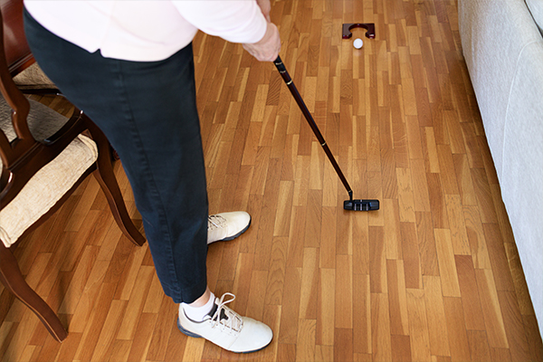

Living Room Setup
Home | Next Location | Previous LocationLocation: Home
You don't always need to leave the house to get meaningful practice in. The living room is arguably the most important winter training facility for shaving strokes off your scorecard by mastering the flatstick.
Using a simple putting mat, you can run drills focused on face control, start lines, and perfect setup posture. Spending 15 minutes a day putting on a mat ensures you don't lose your touch when the greens freeze over outside.
Where to go:
What you will see:

Take me back to the Home Page.
Take me to the Next Location on this Tour.
Take me back to the Previous Location